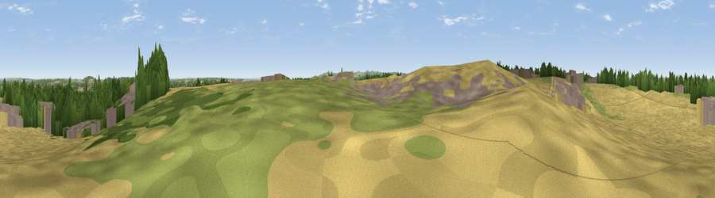

Viewpoint near Kegworth
#41638 in England · top 89% of its area beats it · near KegworthThe view, rendered

A 360° render of this exact spot computed from the terrain model, tree cover and land cover — summer colours, afternoon light, calibrated against photographs of famous viewpoints. Real trees, hedges and buildings will differ in detail.
The panorama
Grey silhouette: terrain skyline in each direction (720 bearings, Earth curvature and refraction included). Dashed green: skyline with trees (+15 m) and buildings (+8 m) as obstacles. Blue strip: how far the ground is visible on each bearing.
Where the view opens
Wedge length = distance to the farthest visible ground on that bearing (vegetation-aware). Rings at 10, 25 and 50 km.
What fills the view
44% cropland · 24% woodland · 21% built-up · 12% grassland
Angular shares of the visible panorama (visual magnitude), not map area. Landscape diversity 0.56 (0–1 Shannon).
Key numbers
More beautiful places nearby
The staircase of upgrades: each row has a higher view potential than everything closer. Driving times are estimates from straight-line distance, calibrated against real road routing — check an actual route before setting out.
| Place | Direction | Drive | Score |
|---|---|---|---|
| Viewpoint near Lockington | NW · 2 km | ~5 min | 47.4 |
| Viewpoint near Thrumpton | NNE · 5 km | ~11 min | 48.0 |
| Viewpoint near West Leake | ENE · 5 km | ~11 min | 48.1 |
| Viewpoint near Gotham | NE · 5 km | ~11 min | 49.9 |
| Viewpoint near Thrumpton | NE · 6 km | ~13 min | 58.6 |
| Viewpoint near Gotham | NE · 7 km | ~14 min | 60.1 |
| Viewpoint near Shepshed | S · 8 km | ~17 min | 63.3 |
| Ives Head | S · 9 km | ~18 min | 73.3 |
52.83145, -1.28833 · source: osm viewpoint · position refined by local search. Computed location — check access rights before visiting.